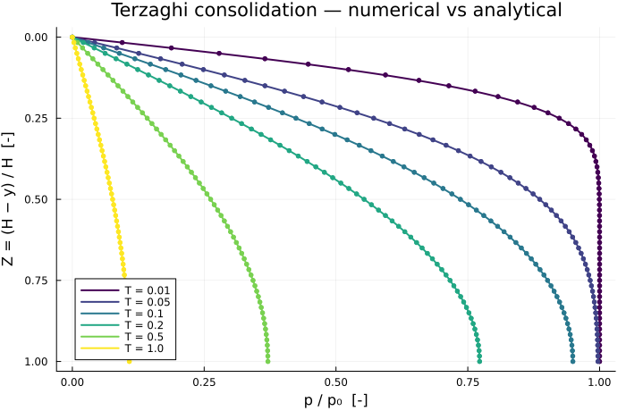

Terzaghi 1D Consolidation
The canonical verification of a poroelastic solver: a saturated column, laterally confined, drained at the top, loaded instantaneously. Terzaghi's closed-form series gives the excess pore pressure at every depth and time, so the numerical solution can be checked against an exact answer rather than against another code (Terzaghi, 1943).
Problem
A column of height $H$, confined laterally ($u_x = 0$ on the sides), resting on a rigid impermeable base ($u_y = 0$, no flow), drained at the top ($p = 0$) where a constant surface load $F$ is applied at $t = 0$.
The one-dimensional Biot equations reduce to
\[\sigma = M_o \varepsilon - b\,p, \qquad \frac{\partial}{\partial t}\left(N p + b \varepsilon\right) = \frac{k}{\mu_l}\frac{\partial^2 p}{\partial z^2}\]
with $M_o = \lambda + 2\mu$ the oedometric modulus and $\varepsilon = \partial u/\partial z$. Vertical equilibrium makes $\sigma$ uniform and equal to $-F$ at all times, so $\varepsilon$ can be eliminated, leaving a diffusion equation for the pressure alone.
Reference solution
With $Z = (H - y)/H$ the depth measured from the drained surface and $T = c_v t / H^2$ the dimensionless time,
\[\frac{p(Z, T)}{p_0} = \sum_{m=0}^{\infty} \frac{4}{(2m+1)\pi}\, \sin\!\left(\frac{(2m+1)\pi Z}{2}\right) \exp\!\left(-\left(\frac{(2m+1)\pi}{2}\right)^{2} T\right)\]
The two constants follow from the equations above — the consolidation coefficient from eliminating $\varepsilon$, and the initial pressure from the undrained limit $N p + b\varepsilon = 0$ at $t = 0^+$:
\[c_v = \frac{k/\mu_l}{N + b^2/M_o}, \qquad p_0 = \frac{F\,b}{M_o N + b^2}\]
At $T = 0$ the series is the Fourier expansion of a square wave and returns 1 everywhere, as it must.
include("biot_common.jl")Main.uniform_scheduleModel
The material is the shared HomogeneousBiot of benchmarks/biot_common.jl; the geometry and the load belong to this benchmark.
const TERZAGHI_MATERIAL = HomogeneousBiot(;
E = 1.0e7, nu = 0.2, k = 1.0e-13, mu_l = 1.0e-3, b = 1.0, N = 1.0e-10,
)
const H = 1.0 # column height [m]
const W = 0.1 # column width [m] — immaterial, the column is laterally confined
const F_LOAD = 1.0e4 # surface load [Pa]
"""Initial (undrained) excess pore pressure ``p_0 = F b / (M_o N + b^2)`` [Pa]."""
initial_pressure(m::HomogeneousBiot, F = F_LOAD) =
F * m.b / (oedometric_modulus(m) * m.N + m.b^2)Main.initial_pressureReference series
"""
terzaghi_pressure(Z, T; nterms = 400)
Excess pore pressure `p/p₀` at normalised depth `Z = (H-y)/H` below the drained surface
and dimensionless time `T = c_v t / H²`.
The series converges slowly for small `T` — the terms decay like `exp(-(2m+1)²π²T/4)` — so
`nterms` is generous by default; the summation cost is negligible next to the solve.
"""
function terzaghi_pressure(Z, T; nterms = 400)
T <= 0 && return 1.0
s = 0.0
for m in 0:(nterms - 1)
a = (2m + 1) * π / 2
s += (2 / a) * sin(a * Z) * exp(-a^2 * T)
end
return s
end
"""Downward traction `-F_LOAD` on the loaded top facet."""
function PoroMechanics.facet_load!(fe, facet, m::HomogeneousBiot, fv_u)
fill!(fe, 0.0)
reinit!(fv_u, facet)
for q in 1:getnquadpoints(fv_u)
dΓ = getdetJdV(fv_u, q)
traction = Vec{2}((0.0, -F_LOAD))
for i in 1:getnbasefunctions(fv_u)
fe[i] += (shape_value(fv_u, q, i) ⋅ traction) * dΓ
end
end
return nothing
endPoroMechanics.facet_load!Solving
One short step to T_start captures the undrained response — the load produces $p_0$ instantaneously, and a first step that is too long would already have dissipated part of it. The rest is marched with a uniform $\Delta T$. Backward Euler is first order in time, so it is $\Delta T$ itself, not the number of steps, that sets the temporal error; it has to be small enough not to mask the spatial error being measured.
"""
run_terzaghi(; m, nely, T_probe, T_start)
Solve the column and return `(m, y, times, pressures)` where `pressures[i]` is the
pressure profile sampled at the nodes of `y` at dimensionless time `T_probe[i]`.
"""
function run_terzaghi(;
m = TERZAGHI_MATERIAL,
nely = 60,
T_probe = [0.01, 0.05, 0.1, 0.2, 0.5, 1.0],
T_start = 1.0e-4,
dT = 2.5e-4,
)
c_v = consolidation_coefficient(m)
t_of_T(T) = T * H^2 / c_v
grid = generate_grid(Quadrilateral, (1, nely), Vec(0.0, 0.0), Vec(W, H))
ip_geo = Lagrange{RefQuadrilateral, 1}()
ip_u = Lagrange{RefQuadrilateral, 1}()^2
ip_p = Lagrange{RefQuadrilateral, 1}()
dh = DofHandler(grid)
add!(dh, :u, ip_u)
add!(dh, :p, ip_p)
close!(dh)
qr = QuadratureRule{RefQuadrilateral}(2)
qr_fac = FacetQuadratureRule{RefQuadrilateral}(2)
cv_u = CellValues(qr, ip_u, ip_geo)
cv_p = CellValues(qr, ip_p, ip_geo)
fv_u = FacetValues(qr_fac, ip_u, ip_geo)
# Drained top, rollers on the sides, clamped base.
ch = ConstraintHandler(dh)
add!(ch, Dirichlet(:p, getfacetset(grid, "top"), (x, t) -> 0.0))
add!(ch, Dirichlet(:u, getfacetset(grid, "left"), (x, t) -> 0.0, [1]))
add!(ch, Dirichlet(:u, getfacetset(grid, "right"), (x, t) -> 0.0, [1]))
add!(ch, Dirichlet(:u, getfacetset(grid, "bottom"), (x, t) -> 0.0, [2]))
close!(ch)
update!(ch, 0.0)
n_loc = ndofs_per_cell(dh)
K1 = allocate_matrix(dh)
K2 = allocate_matrix(dh)
A = allocate_matrix(dh)
as1 = start_assemble(K1)
as2 = start_assemble(K2)
ke1 = zeros(n_loc, n_loc)
ke2 = zeros(n_loc, n_loc)
for cell in CellIterator(dh)
reinit!(cv_u, cell)
reinit!(cv_p, cell)
biot_element_matrices!(ke1, ke2, m, cv_u, cv_p)
assemble!(as1, celldofs(cell), ke1)
assemble!(as2, celldofs(cell), ke2)
end
# Surface load on the top facet
f_ext = zeros(ndofs(dh))
u_range = dof_range(dh, :u)
fe_u = zeros(getnbasefunctions(fv_u))
for facet in FacetIterator(dh, getfacetset(grid, "top"))
PoroMechanics.facet_load!(fe_u, facet, m, fv_u)
dofs = celldofs(facet)
for (i, d) in enumerate(u_range)
f_ext[dofs[d]] += fe_u[i]
end
end
coords = [node.x for node in grid.nodes]
y = [c[2] for c in coords]
p_dof = node_dof_maps(dh, grid, :p).p
# One short step to T_start captures the undrained response, then uniform steps.
# Backward Euler is first order in time, so ΔT — not the number of steps — sets the
# temporal error; it must be small enough not to mask the spatial error.
schedule = uniform_schedule(T_probe; T_start = T_start, dT = dT)
x = zeros(ndofs(dh))
apply!(x, ch)
pressures = Vector{Vector{Float64}}()
probes_left = sort(T_probe)
t_prev = 0.0
for T in schedule
t = t_of_T(T)
dt = t - t_prev
combine!(A, K1, K2, 1.0 / dt)
rhs = copy(f_ext)
mul!(rhs, K2, x, 1.0 / dt, 1.0)
apply!(A, rhs, ch)
x = A \ rhs
t_prev = t
if !isempty(probes_left) && isapprox(T, probes_left[1]; rtol = 1.0e-9)
push!(pressures, [x[p_dof[i]] for i in 1:getnnodes(grid)])
popfirst!(probes_left)
end
end
return m, y, sort(T_probe), pressures
end
model, y, T_probe, p_num = run_terzaghi()(BiotPoroelastic{Float64}(1.0e7, 0.2, 1.0e-13, 0.001, 1.0, 1.0e-10), [0.0, 0.0, 0.016666666666666663, 0.016666666666666663, 0.033333333333333326, 0.033333333333333326, 0.04999999999999999, 0.04999999999999999, 0.06666666666666665, 0.06666666666666665 … 0.9333333333333333, 0.9333333333333333, 0.95, 0.95, 0.9666666666666667, 0.9666666666666667, 0.9833333333333333, 0.9833333333333333, 1.0, 1.0], [0.01, 0.05, 0.1, 0.2, 0.5, 1.0], [[9988.901220057745, 9988.901220057764, 9988.90121988253, 9988.901219882544, 9988.901219285686, 9988.901219285703, 9988.901218026871, 9988.901218026896, 9988.901215606998, 9988.901215607024 … 3648.4254278099365, 3648.425427809935, 2781.166539557627, 2781.1665395576365, 1876.026548399497, 1876.0265483994967, 944.7028140404539, 944.7028140404599, 0.0, 0.0], [9956.858101611602, 9956.858101611619, 9956.38441014634, 9956.384410146362, 9954.954241717285, 9954.9542417173, 9952.540259568486, 9952.540259568494, 9949.096721780936, 9949.096721780934 … 1670.5200407767913, 1670.5200407767459, 1256.9606982453238, 1256.9606982452992, 839.9219970757656, 839.9219970757256, 420.5474248643332, 420.54742486429836, 0.0, 0.0], [9482.050609626833, 9482.050609626873, 9480.023274873909, 9480.023274873945, 9473.935615932567, 9473.935615932602, 9463.770707768936, 9463.770707768977, 9449.500471935047, 9449.500471935073 … 1184.5462717256298, 1184.546271725816, 889.8538889204765, 889.8538889206237, 593.9253425836789, 593.92534258375, 297.1698390454767, 297.16983904547897, 0.0, 0.0], [7715.734589656467, 7715.734589656469, 7713.228544029136, 7713.228544029133, 7705.711275262571, 7705.711275262571, 7693.185392326712, 7693.185392326724, 7675.655258881883, 7675.655258881897 … 827.3530920734001, 827.3530920736072, 621.0869905449662, 621.0869905451074, 414.3307021458912, 414.3307021459681, 207.24721284612227, 207.24721284612076, 0.0, 0.0], [3704.966513730593, 3704.9665137305915, 3703.6970928008095, 3703.6970928008036, 3699.889698908265, 3699.889698908259, 3693.546938154669, 3693.5469381546777, 3684.673152080887, 3684.673152080901 … 387.30140623759564, 387.3014062379183, 290.7086486864733, 290.70864868668025, 193.91657058034292, 193.91657058029975, 96.99153587686162, 96.99153587677604, 0.0, 0.0], [1079.211561931507, 1079.211561931556, 1078.8417430858872, 1078.8417430859338, 1077.7325400043683, 1077.7325400044142, 1075.884712879299, 1075.8847128793332, 1073.299528118985, 1073.2995281190197 … 112.80832652342222, 112.8083265232141, 84.67396356042444, 84.67396356037304, 56.481569291031235, 56.48156929125895, 28.250465374650584, 28.250465374764747, 0.0, 0.0]])Comparison with the reference solution
using Plots
p0 = initial_pressure(model)
c_v = consolidation_coefficient(model)
@printf("Oedometric modulus M_o : %.4e Pa\n", oedometric_modulus(model))
@printf("Consolidation coeff c_v: %.4e m²/s\n", c_v)
@printf("Undrained pressure p₀ : %.4e Pa (load F = %.1e Pa)\n", p0, F_LOAD)
println()
Z = (H .- y) ./ H
"""Relative L2 error of a numerical profile against the reference series."""
function l2_error(pnum, T)
ref = [terzaghi_pressure(z, T) * p0 for z in Z]
return norm(pnum .- ref) / norm(ref)
end
println(" T | L2 error | L∞ error [Pa]")
println("-"^44)
errors = Float64[]
for (T, pn) in zip(T_probe, p_num)
ref = [terzaghi_pressure(z, T) * p0 for z in Z]
e2 = norm(pn .- ref) / norm(ref)
einf = maximum(abs.(pn .- ref))
push!(errors, e2)
@printf(" %8.4f | %.3e | %10.3f\n", T, e2, einf)
end
println("-"^44)
@printf("worst relative L2 error: %.3e\n", maximum(errors))Oedometric modulus M_o : 1.1111e+07 Pa
Consolidation coeff c_v: 1.1099e-03 m²/s
Undrained pressure p₀ : 9.9889e+03 Pa (load F = 1.0e+04 Pa)
T | L2 error | L∞ error [Pa]
--------------------------------------------
0.0100 | 1.240e-03 | 31.821
0.0500 | 4.275e-04 | 6.412
0.1000 | 2.765e-04 | 3.149
0.2000 | 2.162e-04 | 1.467
0.5000 | 3.533e-04 | 1.307
1.0000 | 5.929e-04 | 0.640
--------------------------------------------
worst relative L2 error: 1.240e-03Convergence
A single error figure proves little — it could hide a compensating pair of mistakes. What a benchmark has to show is that the error goes to zero at the expected rate.
function worst_error(; nely, dT)
mm, yy, Tp, pn = run_terzaghi(; nely = nely, dT = dT)
q0 = initial_pressure(mm)
ZZ = (H .- yy) ./ H
return maximum(
let ref = [terzaghi_pressure(z, T) * q0 for z in ZZ]
norm(pv .- ref) / norm(ref)
end for (T, pv) in zip(Tp, pn)
)
endworst_error (generic function with 1 method)Halving $\Delta T$ halves the error: backward Euler is first order in time, and the measurement confirms it.
println(" ΔT | worst L2 error | ratio")
println("-"^42)
prev = NaN
for dT in (2.0e-3, 1.0e-3, 5.0e-4, 2.5e-4)
e = worst_error(; nely = 60, dT = dT)
@printf(" %.2e | %.3e | %s\n", dT, e, isnan(prev) ? "—" : @sprintf("%.2f", prev / e))
global prev = e
end ΔT | worst L2 error | ratio
------------------------------------------
2.00e-03 | 9.871e-03 | —
1.00e-03 | 4.996e-03 | 1.98
5.00e-04 | 2.494e-03 | 2.00
2.50e-04 | 1.240e-03 | 2.01Refining the mesh instead, at a fixed $\Delta T$, the error stops falling once the spatial contribution drops below the temporal floor — which is why the default configuration uses 60 elements and no more.
println("\n elements | worst L2 error")
println("-"^32)
for n in (15, 30, 60, 120)
@printf(" %8d | %.3e\n", n, worst_error(; nely = n, dT = 2.5e-4))
end
elements | worst L2 error
--------------------------------
15 | 5.072e-03
30 | 1.560e-03
60 | 1.240e-03
120 | 1.273e-03Pressure profiles
Markers are the finite element solution, solid lines the Terzaghi series. The isochrones flatten as the pressure diffuses towards the drained surface at $Z = 0$.
plt = plot(;
xlabel = "p / p₀ [-]",
ylabel = "Z = (H − y) / H [-]",
title = "Terzaghi consolidation — numerical vs analytical",
yflip = true,
legend = :bottomleft,
size = (700, 460),
)
Zfine = range(0, 1; length = 400)
order = sortperm(Z)
palette = cgrad(:viridis, max(length(T_probe), 2); categorical = true)
for (i, (T, pn)) in enumerate(zip(T_probe, p_num))
plot!(
plt, [terzaghi_pressure(z, T) for z in Zfine], Zfine;
color = palette[i], lw = 2, label = "T = $T",
)
plot!(
plt, (pn ./ p0)[order], Z[order];
color = palette[i], seriestype = :scatter, ms = 3, mswidth = 0, label = "",
)
end
plt
Notes
- Equal-order elements — $u$ and $p$ both P1. This is not inf-sup stable in general, but the Biot storage term $N > 0$ regularises the pressure block. The error is largest at the earliest probe time, where the pressure gradient at the drained surface is steepest and the mesh resolves it least well.
- The first step sets the initial condition — the column starts unloaded, and the load is applied over the first step. That step must be short enough that the column is still essentially undrained, so it produces $p_0$ and not a partly dissipated pressure. Everything after it is marched with a uniform $\Delta T$.
- Series truncation — the reference sum converges slowly at small $T$; 400 terms keeps the truncation error far below the discretisation error being measured.